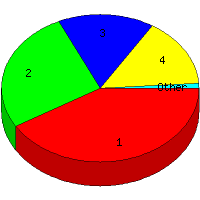

Week of 11/1/2009 to 11/7/2009: Top
5 of
5 File Types (Extensions)
Sorted by Access Count
Individual file types as determined by file extensions. All URLs that
do not contain an extension are counted as directories.

| Rank |
Type |
Accesses |
% |
Bytes |
% |
| 1 |
htm
|
39 |
41.49 |
141,684 |
12.93 |
| 2 |
Directory (folder)
|
25 |
26.60 |
60,375 |
5.51 |
| 3 |
jpg
|
15 |
15.96 |
693,682 |
63.29 |
| 4 |
gif
|
14 |
14.89 |
200,072 |
18.25 |
| 5 |
css
|
1 |
1.06 |
260 |
0.02 |